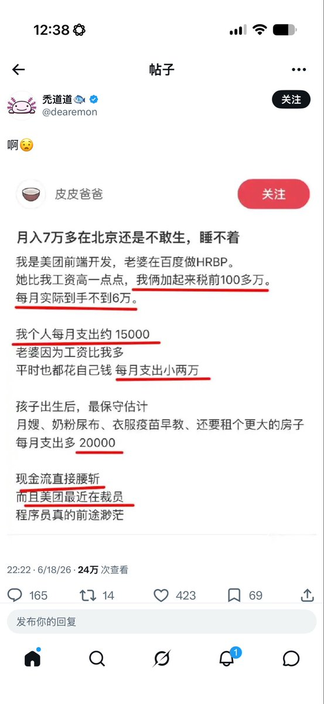

风🎐
@Starrynightwglf
@taresky 币圈AI圈全是这种复制人账号😓

𝘁𝗮𝗿𝗲𝘀𝗸𝘆
@taresky
#赚钱
如果你现在收入还比较低的话，感觉在 X 上做搬运号可能是还不错的生意。
类似这种垃圾号，无限搬运在内地已经火的内容，甚至十年前二十年前的神贴、热帖，总有被流量选中的。
然后再翻译成各国语言，或者每个国家都起一个新号。
有点编程和 AI 基础，我猜测，仅猜测，做个月收入 5 https://t.co/nqARzc7t4A